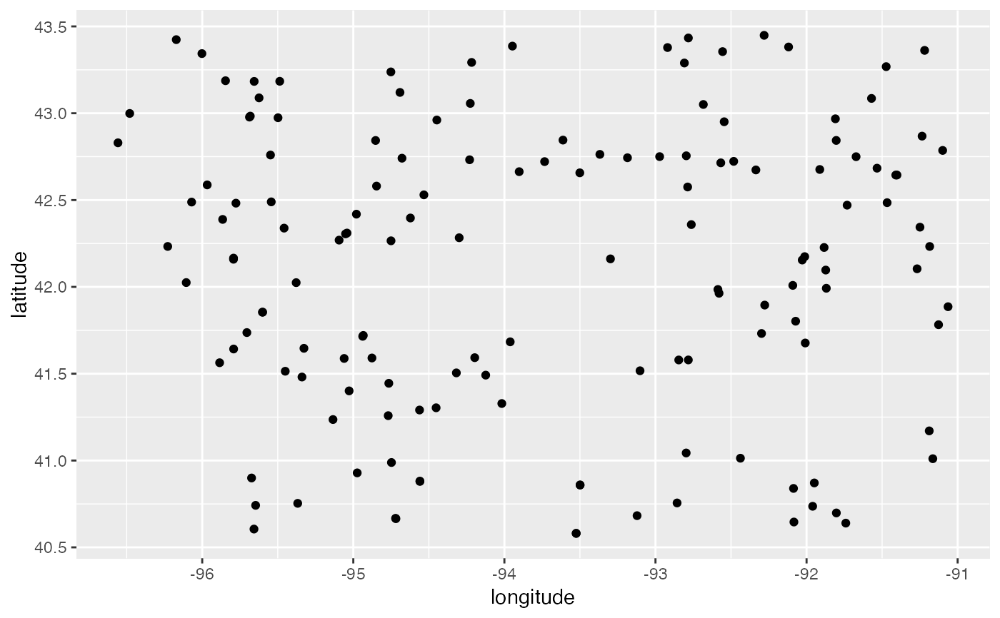

health.clinics.RdDataset was scraped by Masoud Nosrati from the Iowa Association of Rural Health Clinics in Mar 2020, geocoding by Andrew Maloney through QGIS.
health.clinics
A data frame with 146 rows and 11 variables:
identifier, not quite the row number
name of the clinic
address of the health clinic
name of the county
146 0s XXX delete column?
146 OKs XXX delete column?
formatted addresses - some are duplicates - XXX look into
identifier, based on address? - some are duplicates - XXX look into
categorical variable with additional details on location.
geographic latitude
geographic longitude
https://iarhc.org/find-a-rural-health-clinic?view=map
# Map of rural health clinics in Iowa using ggplot2 library(ggplot2) library(dplyr) # for the pipe health.clinics %>% ggplot() + geom_point(aes(x = Longitude, y = Latitude))# leaflet map library(leaflet) library(sf) health.clinics %>% leaflet() %>% addTiles() %>% addPolygons(data = ia_counties, weight = 1, color="#333333") %>% addCircleMarkers(lng = ~Longitude, lat = ~Latitude, radius = 1, stroke = 0.1, label = ~NAME)